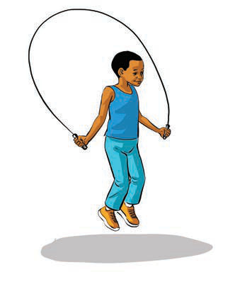

Traditional games
Traditional games are important in society because of their social and cultural significance. These games provide people with opportunities to participate,

Traditional games are important in society because of their social and cultural significance. These games provide people with opportunities to participate,